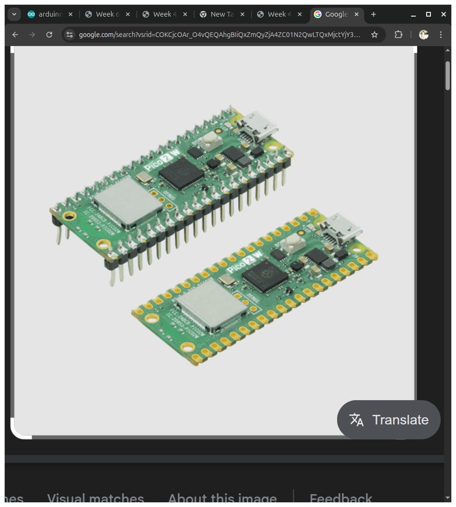
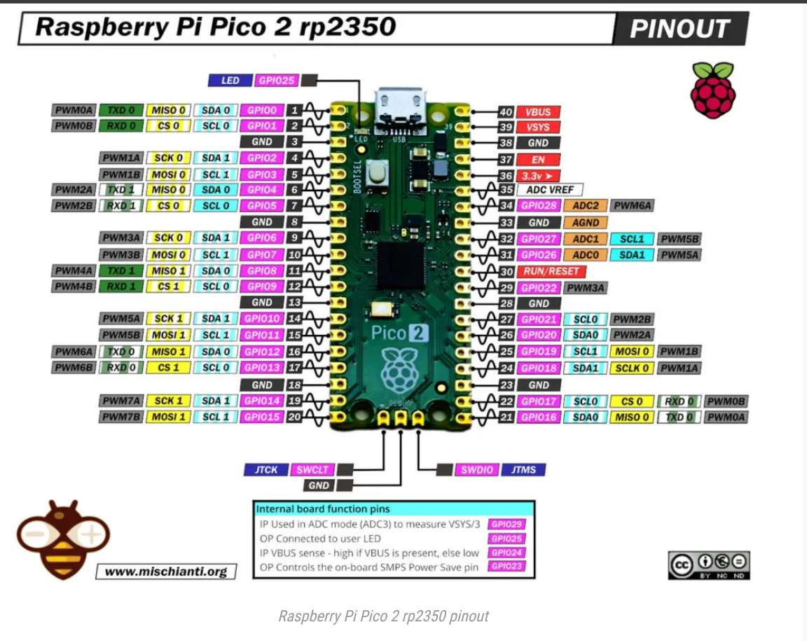
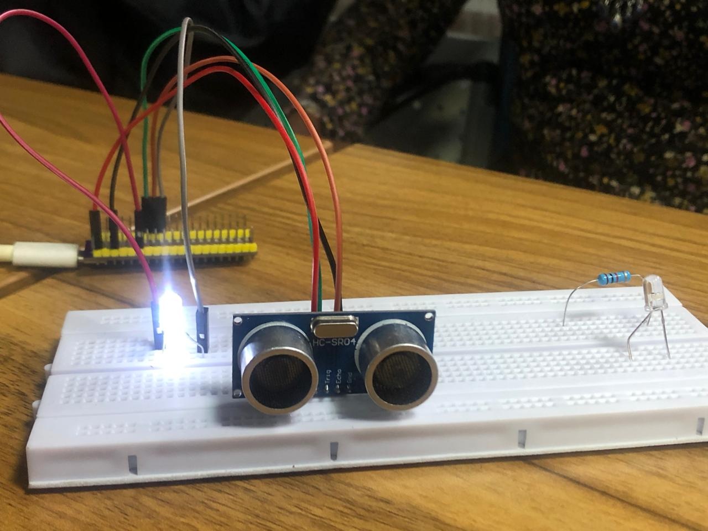
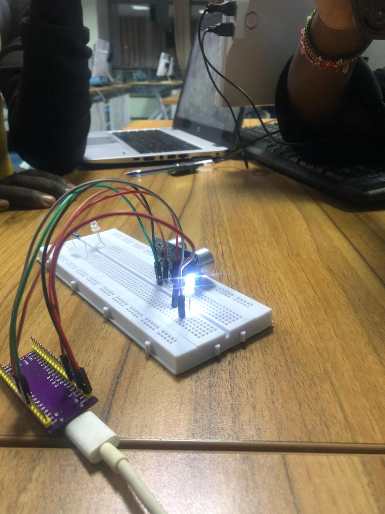

Week 4 introduced us to the Raspberry Pi Pico — a revolutionary microcontroller board that marked the Raspberry Pi Foundation's entry into the microcontroller space. Unlike single-board computers that run operating systems, the Pico operates as a dedicated microcontroller executing a single program directly on hardware.
What is the Raspberry Pi Pico?


The Raspberry Pi Pico is a tiny, affordable microcontroller board based on the RP2040 silicon — a chip designed entirely in-house by the Raspberry Pi Foundation. It represents a deliberate pivot from single-board computers (which run Linux) to microcontrollers (which run bare-metal or RTOS firmware).
Key Specifications
Processor: RP2040 — dual-core ARM Cortex-M0+ at up to 133 MHz
Memory: 264KB of SRAM, 2MB of QSPI Flash (external)
Understanding the pinout is fundamental to effective Pico development. Each pin can serve multiple functions through pin multiplexing.
Power Pins
VBUS: 5V from USB connection — available when powered via micro-USB
VSYS: Main system input (3.3V-5.5V) — regulated to 3.3V internally
3V3: Regulated 3.3V output — powers the RP2040 and GPIO
GND: Ground reference — multiple pins provided
RUN: Reset pin — pulling low resets the processor
GPIO Pin Bank
The Pico provides 30 physical pins, 26 of which are user-accessible GPIO pins:
GPIO 0-22: General-purpose digital input/output
GPIO 26-28: Dedicated analog input channels (ADC0, ADC1, ADC2)
GPIO 29: Connected to onboard LED (digital output only)
Communication Peripherals
UART: Two UART peripherals (UART0 on GP0/GP1, UART1 on GP4/GP5)
SPI: Two SPI controllers (SPI0 on GP0-GP3, SPI1 on GP4-GP7)
I2C: Two I2C controllers (I2C0 on GP0/GP1, I2C1 on GP4/GP5)
PWM: 16 PWM channels — any GPIO can be assigned to PWM
VBUS (USB Power)
The VBUS pin carries the 5V supply from the USB connection and serves several critical functions:
Power Detection
The RP2040 can detect USB power presence via the VBUS sense signal
Software can query this to determine if the device is USB-powered or battery-powered
Enables adaptive power management strategies
Current Limiting
USB specification limits current to 500mA maximum
VBUS can supply this current to external components
Important for designing USB-powered projects
Power Switching
When both USB and external power (via VSYS) are present, VBUS typically takes precedence
External circuits can implement automatic switching between power sources
Critical for battery-backed systems
Boot Process and BOOTSEL
Understanding the boot sequence is essential for troubleshooting and custom firmware development.
Boot Sequence
Power-On: Upon applying power (USB or VSYS), the RP2040 executes ROM bootloader
Flash Access: The bootloader reads program data from external QSPI Flash
Execution: The loaded program begins execution from the main() entry point
User Mode: Normal operation — the microcontroller runs the uploaded firmware
BOOTSEL Button
The BOOTSEL button provides a mechanism for entering bootloader mode without external programming hardware:
Activation: Press and hold BOOTSEL while connecting USB or pressing RUN
Mass Storage Mode: The Pico appears as a USB drive named "RPI-RP2"
Firmware Upload: Drag and drop a .uf2 (USB Floppible Format) file onto the drive
Automatic Reboot: After file transfer, the device automatically reboots and runs the new firmware
UF2 Format
The USB Floppible Format (UF2) is a Microsoft-designed format for flashing devices over USB mass storage:
Simple drag-and-drop interface — no specialized software required
Built-in protection against incorrect firmware installation
Supported by various microcontroller platforms beyond the Pico
Programming the Pico
we programmed the pico to light up the onboard LED using C and the Pico SDK.we also tried the same using microPython on Thonny , the results are as shown below on the images,
we also tried to include external leds and rgbs and included some resistor so as to ensure that th RGB didn't burn out :


Documentation and Resources
The Raspberry Pi Foundation provides extensive documentation:
Comprehension of microcontroller fundamentals and their distinction from single-board computers
Proficiency in reading and interpreting the Pico pinout diagram
Understanding of VBUS power management and USB power specifications
Mastery of the BOOTSEL button and UF2 firmware upload mechanism
Knowledge of communication peripherals (UART, SPI, I2C, PWM)
Ability to locate and utilize official documentation for technical reference
Foundation for advanced Pico projects involving Wi-Fi (Pico W) and external peripherals
Week 4 established a solid foundation for embedded systems development using the Raspberry Pi Pico — a platform that balances accessibility with professional-grade capabilities.